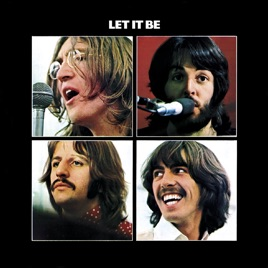

LET IT BE

Ultimo album de estudio, a pesar de que fue grabado antes que Abbey road. Editado en el Reino Unido el disco salio al mercado el 8 de mayo de 1970.
Se trata de un álbum controvertido desde su concepción: una vez que dejaron de tocar en vivo en 1966 por la imposibilidad de plasmar su musica en el escenario los Beatles se propusieron grabar un álbum para tocar un último concierto en vivo, tal vez en un barco o en un lugar público. Por tanto las sesiones de grabación del disco comenzaron a ser filmadas en 1969 por el cineasta Michael Lindsay Hogg.
Las canciones del album son: